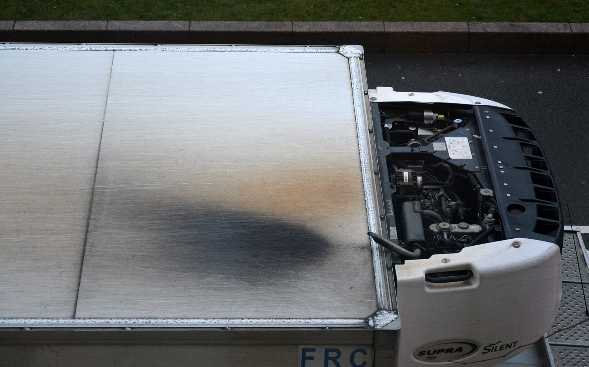
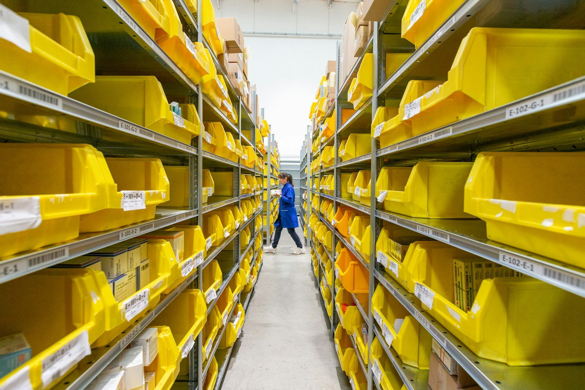

Spot spoilage risk
before the handover.
For fresh-produce exporters, cold stores and logistics operators. Coldline checks pallet images and changing temperature records, then explains which shipment needs a cold-chain intervention.



A warning should explain
where the risk changed.
The prepared shipment record stayed above 6°C for 35 minutes. Review the temperature history alongside the pallet observation.
A shipment warning
with a reason to act.
AI reviews produce images and temperature histories to flag shipments at risk. Choose a sample case and inspect the evidence behind the finding.
The source material
At 12:00 the recorded temperature reached 6.8°C. The shipment stayed above the scenario threshold of 6°C for 35 minutes. Subsequent readings returned toward 4°C.
Evidence is prepared for this demonstration. Use the source reference to check the finding.The review brief
Run the sample.
Then inspect the finding.
See how the source becomes a specific question, a cited observation and a next action.
633,600
condition checks per month in the stated deployment scenario.
55 organizations × 120 active shipments per operator × 24 checks per shipment / month × 4 images and records per check.
Planning scenario. This is an estimate, not measured customer traffic or Azure consumption.Put the workflow
in front of your team.
The warning supports an inspection. It does not certify food safety or replace a qualified quality decision.